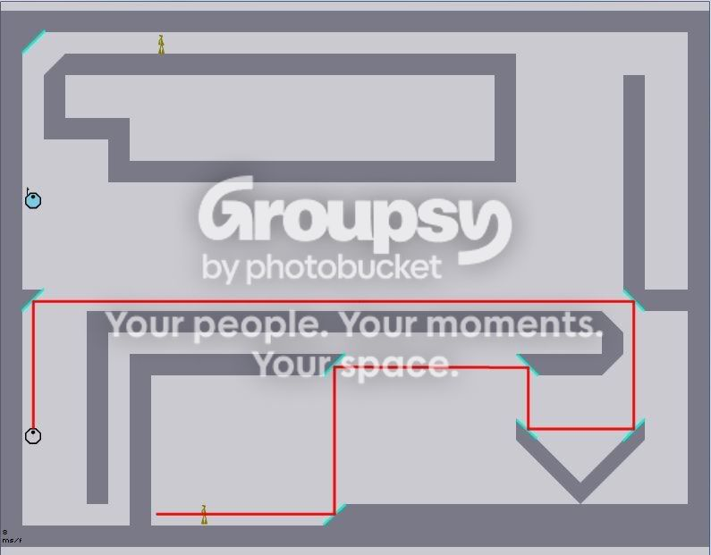

Imagine you're hiding from a laser drone around a corner. But what if a mirror angled at a 45 degree angle allowed the drone to detect and fire its laser at you through the mirror. It could also let zap drones find and track you around the same corner. They could make levels more complex and make for even crazier DDAs.
See pic for example.
The blue "mirror" allows the laser to bounce off multiple points allowing it to hit the ninja despite the numerous walls protecting him.
The ninja above can easily be seen by the zap drone and it would speed up to kill the normally unseen ninja above.
See pic for example.

The blue "mirror" allows the laser to bounce off multiple points allowing it to hit the ninja despite the numerous walls protecting him.
The ninja above can easily be seen by the zap drone and it would speed up to kill the normally unseen ninja above.